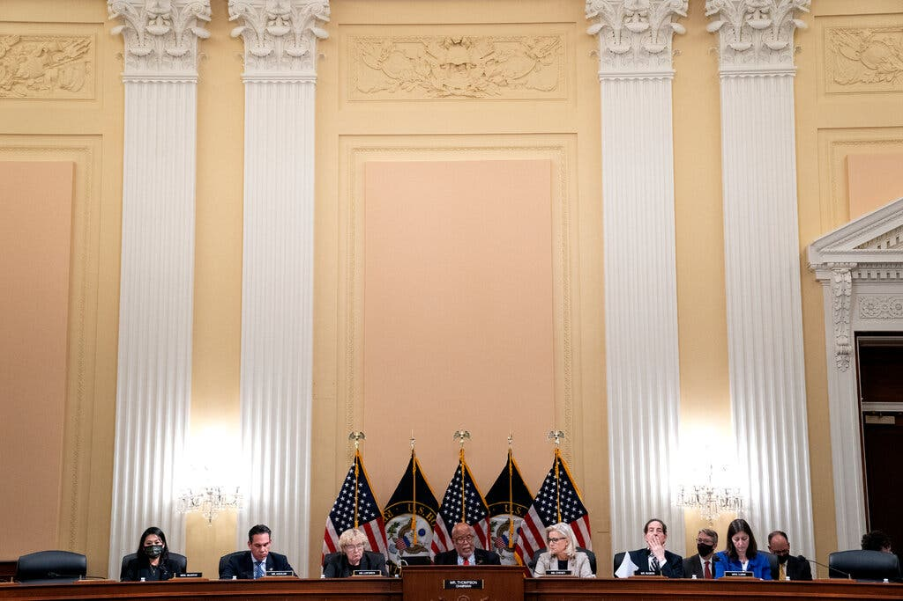

In Scrutinizing Trump and His Allies, Jan. 6 Panel Adopts Prosecution Tactics
The House committee investigating the assault on the Capitol and what led to it is employing techniques more common in criminal cases than in congressional inquiries.

The House select committee scrutinizing the Jan. 6 assault on the Capitol is borrowing techniques from federal prosecutions, employing aggressive tactics typically used against mobsters and terrorists as it seeks to break through stonewalling from former President Donald J. Trump and his allies and develop evidence that could prompt a criminal case.
In what its members see as the best opportunity to hold Mr. Trump and his team accountable, the committee — which has no authority to pursue criminal charges — is using what powers it has in expansive ways in hopes of pressuring Attorney General Merrick B. Garland to use the Justice Department to investigate and prosecute them.
The panel's investigation is being run by a former U.S. attorney, and the top investigator brought in to focus on Mr. Trump's inner circle is also a former U.S. attorney. The panel has hired more than a dozen other former federal prosecutors.
The committee has interviewed more than 475 witnesses and issued more than 100 subpoenas, including broad ones to banks as well as telecommunications and social media companies. Some of the subpoenas have swept up the personal data of Trump family members and allies, local politicians and at least one member of Congress, Representative Jim Jordan, Republican of Ohio. Though no subpoena has been issued for Mr. Jordan, his text messages and calls have shown up in communications with Mark Meadows, the former White House chief of staff, and in a call with Mr. Trump on the morning of Jan. 6, 2021.
Renate Reinsve Steps, Reluctantly, Into the Spotlight.
The Norwegian actress was ready to quit the business before she was cast as the lead in “The Worst Person in the World.” Now she's navigating newfound fame.
At a dinner during the Cannes Film Festival in July, Renate Reinsve found herself so nervous in the company of famous actors that she spent the evening chatting with their bodyguards instead. When a photographer who had been taking pictures of Timothée Chalamet appeared near the group, she said, her new friends waved him over.
“They were like, She's an actress, too” Ms. Reinsve, 34, recalled in an interview in January.
She had flown to Cannes from Oslo, where she lives, for the premiere of “The Worst Person in the World,” in which she stars as Julie, a millennial woman in the midst of a quarter-life crisis, grappling with the pressure she feels to pursue a career, find a partner and form a family. It was Ms. Reinsve's first lead role in a film.
After some prodding, the photographer turned his lens to her. “He lifted his camera, and then he didn't press the button,” she said. “I wasn't worth it.”
Ms. Reinsve won the Cannes award for best actress a few days later. And in the months that followed, the film, directed by Joachim Trier, made the festival rounds, where it garnered praise for Ms. Reinsve's performance. Louis Vuitton asked her to become a brand ambassador. Just this week she was nominated for a BAFTA in the best actress category.
At the end of January, Ms. Reinsve arrived in New York City to promote the film ahead of its American release on Feb. 4. Wearing a simple white dress and her hair in a ponytail for breakfast at Sadelle's in Manhattan, she surveyed the tower of smoked salmon, cucumbers, tomatoes, dill and capers on the table and wondered if she would be able to eat despite her nerves. She had been up since 3 a.m., unable to sleep after she found out that she would appear on “Late Night With Seth Meyers” that evening.
White House: File your taxes to get full child tax credit.
The administration is encouraging people to send their tax forms to claim the remaining credits, including those whose incomes are so low that they might not have traditionally filed.
The Biden administration is kicking off an outreach campaign to get millions of families to file their taxes so they can receive the second half of payments from the expanded child tax credit.
Vice President Kamala Harris, Treasury Secretary Janet Yellen and White House senior adviser Gene Sperling are hosting a virtual event Tuesday to encourage people to send their tax forms to the IRS, including those whose incomes are so low that they might not have traditionally filed.
Several lawmakers and nonprofits are taking part in the event, and there are plans to hold events in all 50 states and Puerto Rico during the tax filing season, according to a White House official who insisted on anonymity to discuss the forthcoming plans.
As part of the $1.9 trillion coronavirus relief package, President Joe Biden increased the child tax credits to $3,600 annually for each child aged 5 or under and $3,000 for those who are age 6 to 17. The government began to send the payments out on a monthly basis starting last July, meaning that there are six months worth of payments waiting to be claimed by people filing their taxes.
The payments would come at a moment when families are coping with rising prices for food, gasoline and other goods relative to a year ago. Administration officials estimate that $193 billion would go to 58 million eligible households that file taxes, meaning that families would receive credits on their taxes or refunds averaging $3,330 from this provision.
Do you like travel?
Travelling from Liverpool to London by train.
Planning a day out and want to know more about the journey from Liverpool to London by train? Look no further!
The train from Liverpool to London usually takes around 3h 10m but can take just 2h 3m on the fastest services, with around 58 trains running on this popular route per day. Once you're on board, you can sit back and relax, as you won't need to make any changes along the way.
You'll be travelling with Avanti West Coast on this route. All Avanti trains come with free WiFi, power sockets, and luggage racks, as well as a bar carriage where you can buy snacks and drinks throughout your journey.
To snap up the cheapest fares, book an Off-Peak time – tickets are usually cheaper when you travel Off-Peak compared to taking the train at Peak times. If you want to save even more, get a Railcard – you'll save up to 1/3 on eligible journeys for a whole year.
If you're feeling ready to book, start a search for cheap train tickets with us today. Want to check if trains are running? Use our timetable to view live train times from Liverpool to London.
The Fun Zone
All "Photos" of What Cartoon Characters Would Look Like in Real Life.
What would famous animated characters from movies and TV shows look like in real life? One digital artist has created a fascinating series of AI-assisted “portraits” that provide the answers to that question. Hidreley Leli Diao is a Brazilian artist “who loves everything related to digital art.” After discovering that artificial intelligence software can create photo-realistic portraits of people who do not actually exist, Diao began experimenting with the technology in creative ways. “Since I discovered artificial intelligence, I've been challenging myself to do things I would never have imagined doing,” Diao tells PetaPixel. “With several studies and a lot of practice, I thought it was time to bring some Disney characters to human life.” Diao says he grew up watching the Simpsons, Hanna Barbera shows, and Disney animations that made a big impact on his life. With state-of-the-art AI photo software, Diao was able to create lifelike portraits of some of his favorite characters.
Moe from The Simpsons
Moana
Prince Eric from The Little Mermaid
Tinkerbell from Peter Pan
Carl Frederickson from Up
Ariel from The Little Mermaid
Millhouse from The Simpsons

Ned Flanders from The Simpsons
Jasmine from Aladdin
Pocahontas
Aladdin
Rapunzel from Tangled
Peter Pan

Mulan
Joe Gardner from Soul
Prince Hans from Frozen
Mirabel from Encanto
“When we watch some animation, it is natural to accept the cartoonish proportions of the characters without any problems, after all, we are quite used to this type of trait,” Diao writes at Bored Panda, where is a contributor. “But what if, as in a spell, they became real, flesh and blood? I tried to bring them into our world through artificial intelligence.” The software Diao used to create the “photos” were Photoshop and three different mobile AI photo editing apps: FaceApp, Gradient, and Remini. Each portrait was created by scouring the Web for portraits containing facial features matching the characters. “I look for images in banks and overlay the image starting with the eyes,” Diao says. “The hardest part is finding an image that matches the character I'm working on.” P.S. You can follow along with Diao's work on his Instagram.
The Beijing Winter Olympics
What Xi Jinping stands to gain from the Beijing Winter Olympics
The 2022 Winter Games in Beijing provide many benefits for China, and really don't have any downsides for the country. For China's leader, Xi Jinping, the most important result of the Games will likely be their impact on his domestic audience, as Chinese media coverage of the Games will be highly nationalistic and laudatory, aimed at impressing the Chinese people. To this home audience, the spectacle of the Games reinforces government propaganda about China's success and progress toward achieving the “Chinese Dream of the great rejuvenation of the Chinese nation.” But I don't predict the 2022 Games will have the same effect, either domestically or internationally, that the Beijing 2008 Summer Olympics had, partially because the Winter Olympics are smaller and the weather is harsher, and partially because 2008 was the first time China hosted the Olympics. In 2008, stunning opening ceremonies including 5,000 syncopated dancers telling a stylized story of 5,000 years of Chinese history astonished the international audience. The power of that first time cannot be repeated. Nonetheless, China has spared no expense to prepare, with a report from Insider pegging the total cost “in excess of US$38.5 billion, 24 times the country's initial budget of $1.6 billion.” As with everything China does, when it wants to occupy the center stage internationally, it will put on a big show. The domestic payoff of the Olympics matters because China will face a trying year in 2022. Xi is seeking an unprecedented third term as general-secretary of the Communist Party. The nation's economy is slowing. International opposition to China's human rights abuses in Xinjiang and Hong Kong and to its aggressive foreign policy is growing. Xi is hoping that the “bread and circuses” diversionary aspect of the Games will help him overcome the stresses of this year and advance his political standing.
Domestic standing is crucial focus
Chinese leaders care about improving the nation's international status, but they're already working from a position of relative strength. China's rise internationally, especially since 2008, is undeniable. Its status as the number two power in the world is almost universally acknowledged. As a scholar of Chinese politics and foreign policy, I believe that Xi wants the Games to impress the world. But that is less important to him than the domestic effect of the Games. China is not traditionally strong in winter sports. But the country has invested heavily in preparing increasingly competitive teams for these Games. The success of Chinese athletes at the Games will enhance China's reputation and thus Chinese citizens' sense of pride. In turn, this will mute competition from Xi's opposition within the Chinese Communist Party. FreeSki world champion Eileen Gu chose to compete for China—her mother is Chinese—and not the US, where she was born and is a citizen. Her choice may yield golds in areas where China is not a strong competitor. Her decision also reverberates with Xi's call on all ethnic Chinese worldwide to aid China's development. Chinese domestic propaganda will highlight how she chose China over the US, and implicitly urge others to do the same.
Burying dissent
In the run-up to the August 2008 Summer Games, China faced widespread human rights criticism for its support for the Sudanese government's crimes against humanity in Darfur and its suppression of massive protests by Tibetans. The breathtaking opening ceremonies and the successful Games muted the criticisms. When the global financial crisis erupted the next month, the Games were taken by the Chinese people as a symbol of China's ascendence, and the financial crisis as a sign of the US' decline. Similarly, in the run-up to 2022, China's human rights practices are under heavy fire, especially for its mass incarcerations in Xinjiang and suppression of basic rights in Hong Kong. The Winter Games may not have the symbolic power of the 2008 Olympics. But human rights will likely not receive much attention despite full-page advertisements in The New York Times condemning China's human rights record and urging US companies to not buy ads on NBC, the television network carrying the Olympics in the US. Among the elements which help Xi achieve the propaganda and political goals he wants: the threat from covid-19. No spectators from the general public will attend the events. Athletes, officials, and journalists will be kept in a small geographic bubble to ensure that they will not bring covid-19 to China nor spread it once there. Journalists will neither have the ability to interview ordinary Chinese people, nor any chance to investigate any non-Olympics-related news stories. There may be individual acts of protest by some non-Chinese athletes against Chinese human rights practices. But those protests will not be shown on Chinese television, and the protesters will likely be forced to leave China. The Washington Post reported that in late January, Yang Shu, a member of China's Olympic Organizing Committee, said in a press conference that “Any expression that is in line with the Olympic spirit I'm sure will be protected… Any behavior or speech that is against the Olympic spirit, especially against the Chinese laws and regulations, are also subject to certain punishment.” With no spectators and a highly controlled environment for the athletes and foreign observers, there is little chance for significant demonstrations to break out.
What's the payoff?
China spent billions to construct the sites for the events and it will use untold millions of gallons of water to manufacture artificial snow for the skiing competitions. Winter is the dry season in Beijing, and snowfall is rare despite the very cold temperatures. The costs may produce some grumbling by environmentally and fiscally concerned Chinese which will quickly be suppressed. And if the Chinese team performs well, these complaints may be seen as unpatriotic. For Xi Jinping and the rest of Chinese leadership, the gains of the Olympics are immediate, and the costs are diffuse and longer-term. In the end they will—through propaganda and the suppression of dissent—tell a story of triumph to their domestic audience, which makes holding the Olympic Games useful for their political purposes.